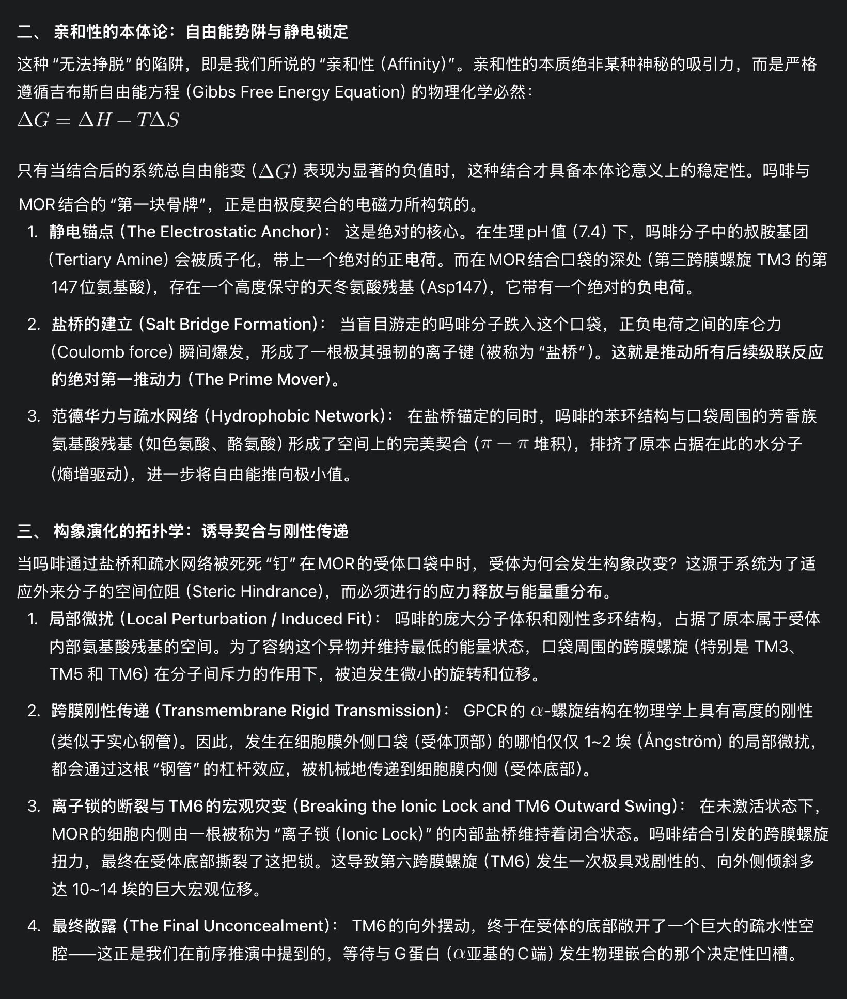

炽烈已极
@AnIncandescence
@Prechaska 见过一种阿片的偏向性激动剂，大概就是设计的一种药物，只走G蛋白通路、不招募β-arrestin，理论上可以保留镇痛效果，同时减少耐受、呼吸抑制、便秘等副作用
在获取前最后一步出问题了可恶……不用还债看起来真的很诱人

Nutilité
@Prechaska
天哪，这就是第一推动力，一切只是因为吗啡分子撞进了受体口袋，并被其中的静电力所俘获，最开始只是这样微小的电荷吸引，最终造成了躯体层面感官的完全改变。在这个意义上人体的确是个自动机，在这之后，人究竟在多大程度上拥有自由意志就必须被重新考虑 https://t.co/2neuuF2D4z